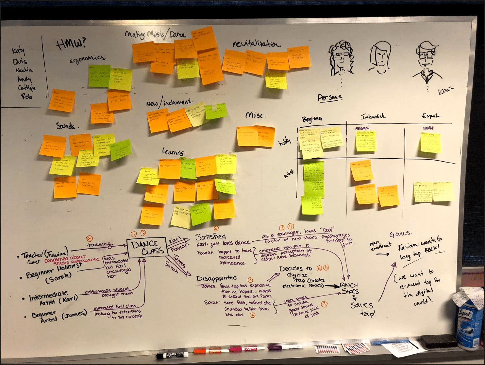

To begin the project we used the Google Design Sprint by Jake Knapp . For day 1, understand, we used multiple methods of ideation. We used How Might We’s, user tables, maps, and sprint questions to develop the base of the initial idea. For day 2, sketch, each individual member use the crazy 8’s method to sketch quick solutions to the problem. Each member then used their shoe and accessory ideas to create their final solution sketch. For day 3, decide, the solution sketches were hung anonymously to ensure no bias judgement. To decide which ideas were feasible, we used silent heat map voting and final discussion. For day 4, validate, we used the storyboard that we created to begin designing the low-fidelity prototype. For the final day, testing, we tested the prototype with other Systems Design students. This final day, testing, gave us feedback for the 3D printed taps and the associated web prototype to introduce sensor settings.
To begin the project we used the Google Design Sprint by Jake Knapp . For day 1, understand, we used multiple methods of ideation. We used How Might We’s, user tables, maps, and sprint questions to develop the base of the initial idea. For day 2, sketch, each individual member use the crazy 8’s method to sketch quick solutions to the problem. Each member then used their shoe and accessory ideas to create their final solution sketch. For day 3, decide, the solution sketches were hung anonymously to ensure no bias judgement. To decide which ideas were feasible, we used silent heat map voting and final discussion. For day 4, validate, we used the storyboard that we created to begin designing the low-fidelity prototype. For the final day, testing, we tested the prototype with other Systems Design students. This final day, testing, gave us feedback for the 3D printed taps and the associated web prototype to introduce sensor settings.
The MFP included real sensors and mapping to Ableton, a music production software. During the session we asked users to speak their thoughts but it is quite difficult when testing a project. When users first tried on the shoe they would ‘play around’ to feel for comfort. When I was watching people test I wanted to know the pattern that a new user would take to learn the shoe. While looking that the users movements, I would consistently ask, “what are trying to accomplish?” or “why do you look confused?” to pull out more specific patterns and feedback. The more in-depth feedback of our prototype really helped our group determine what the most and least common responses were. The user testing led to a meeting were the group was able to determine the new placements of the sensors on the bottom of the shoe. Since the new shoes have different bending locations we were able to test the strongest pressure points on the toes, ball, and heel of the foot